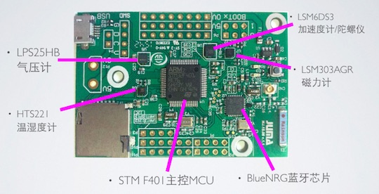

Cannon介绍
简介
Cannon是基于STM32平台和BlueNRG蓝牙芯片设计的高性能开发板，它的板载资源丰富、处理能力强大，并能够远距离传输蓝牙信号。

硬件特性
1. 处理器：STM32F401
- ARM Cortex-M4，最高可达84MHz frequency；
- 512KB Flash / 96KB SRAM；
- 1.7V-3.6V供电电压；
2. 低功耗蓝牙芯片：BlueNRG
- 发射功率最高可达+8dBm；
- 发射峰值电流8.2mA @0dBm, 3V；
- 待机电流1.7uA；
- 支持蓝牙Master与Slave模式；
- 支持蓝牙GAP、GATT、SM、L2CAP、LL、RF_PHY层；
- MCU接口：HCI(Host-Controller Interface) over SPI；
- 附有巴伦天线匹配芯片；
3. 传感器阵列
- 加速度计/陀螺仪：LSM6DS3
- 磁力计：LSM303AGR
- 温湿度计：HTS221
- 气压计：LPS25H
4. 其他
- 3组I2C、4组SPI、3组UART、USB、TF卡槽等、按键、LED等；
- 可选择的Cable天线和陶瓷天线；
- 可选择的USB供电、电池组供电；
软件特性
- JUMA SDK；
- 低功耗任务调度机制，支持32个任务调度；
- 开放BLE API接口（嵌入式端/APP端）；
- 传感器数据接口（嵌入式端/APP端）；
- 嵌入式软件空中升级（嵌入式端/APP端）；
- To Be Continued...；
规格手册
请下载：Cannon.pdf
更多资料
请访问： http://www.juma.io/platform/cannon.html